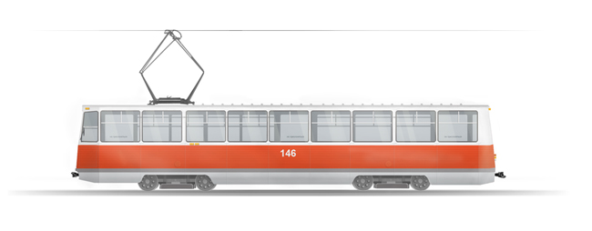

Череповецкий трамвай. Технический рисунок.
Рисовал для себя, с целю потренироваться, не заметил как прошла ночь.

{kind=link}
Люблю трамваи, особенно эту модель (КТМ-5), может это связано с воспоминаниями из детства, когда я жил в центре города, и иногда с родителями передвигался трамваем. Помню даже собирал билетики от трамвая)). С переездом в Зашекснинский район, перестал ездить на трамвае. И если подворачивался случай (раз в два года, а то и меньше) прокатиться в этом трясущемся вагончике, то я испытывал какойто детский восторг.
Лишь этим летом я вдоволь накатался, так как случилось пожить немного в Зареченском районе, а работал на тот момент в городе.
Вообще череповецкий трамвай интересная штука, я раньше думал, что эти вагончики клепали прямо у нас на заводе, однако это не так, эти трамваи строили на Усть-Катавском вагоностроительном заводе имени С. М. Кирова с 1963 года аж до 1992 г. По ходу это самый массовый трамвай в СССР
Еще если заглянуть в Википедию, то кроме того, что к 1990 году трамвай уже должен был ходить в 104, можно узнать, что у нас на базе трамвая хотели строить «легкое метро», или «быстрый трмвай», первый маршрут которого производил бы сообщение города и химзавода.
Вот такие дела. Впрочем, что то скептично получилось, плана по развитию трамвая и легко метро никто не отменял, если брать в учет, что политика приусадебного расселения все же активно начнет продвигаться в России, то возможно вскоре мы будем жить в нью-деревнях, а в город ездить на таком пока еще редком, легком метро.
Смотреть рисунок трамвая в большом разрешении
Смотреть исходную фотку
{kind=link}